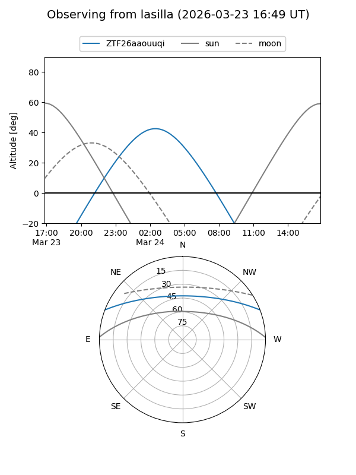
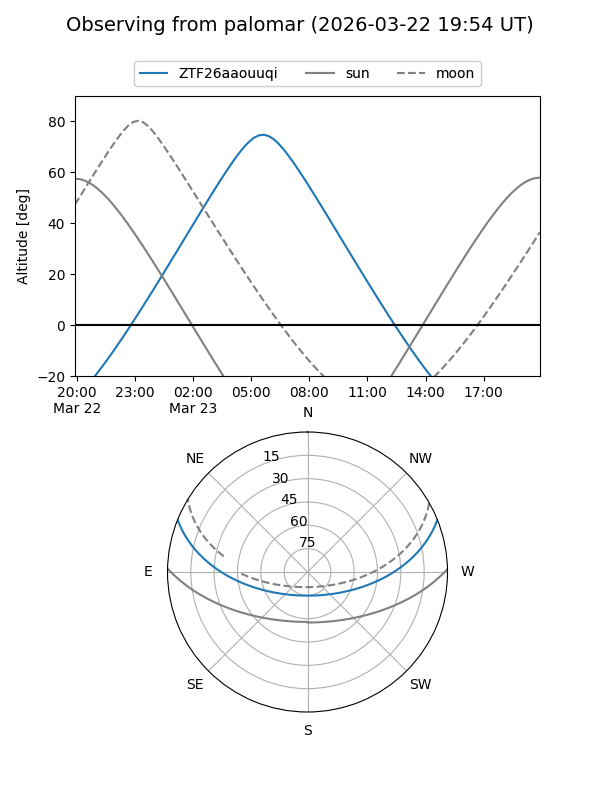

ZTF26aaouuqi
Target ZTF26aaouuqi at 2026-03-23 10:23
Aliases and brokers:
FINK: link
Lasair: link
ALeRCE: link
alt names
ZTF26aaouuqi (ztf,fink_ztf)
Coordinates:
equatorial (ra, dec) = 147.5075,+18.27079
equatorial (HMS+DMS) = 09:50:01.81,+18:16:14.85
galactic (l, b) = (215.0740,+47.46485)
Flags:
Photometry:
last ztfg=17.27
1 ztfg detections
Lightcurve
Visibility


Additional plots